A new operating system for an old Casio PDA
Glaze is a microkernel OS written from scratch for the Casio Cassiopeia BE-300, with a touch interface in the style of the first iPhone. It runs on real hardware from CompactFlash through GlazeBoot, and in the BE-300 emulator.
GlazeBoot starts Glaze from a CF card without flashing the device. Or try it on linux4be.com: tap or press a key to enable emulator sound.
Tested on a real Cassiopeia BE-300 · October 25, 2026
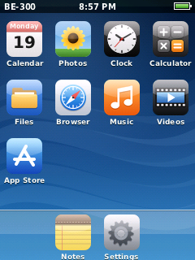
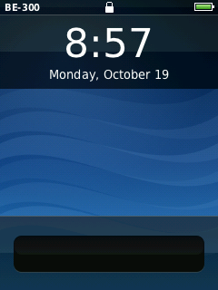
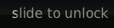
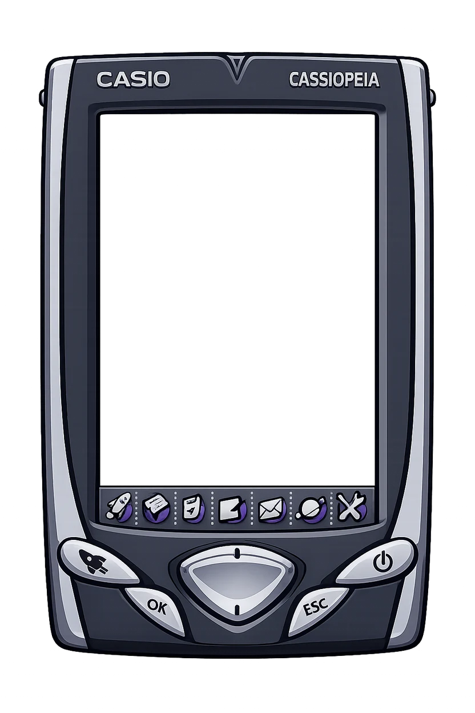
New in Glaze
Updated . Real-device booting, networking and audio, plus more ways to use Glaze.
- GlazeBoot
- Start Glaze from Windows CE using a CompactFlash card. Touch, buttons, apps, card storage and read-only access to the original NAND volume work on a real BE-300. Get the ready-to-boot ZIP.
- Wi-Fi and Ethernet
- Settings now scans and selects networks for Z-Com XI-825 and AmbiCom WL54-CF cards, with saved connections and security options supported by each card. Insert a network card after GlazeBoot loads from the storage card. See the hardware test status.
- Headphone audio
- Music, radio and notification tones now play through the headphone jack after GlazeBoot. Settings → Sounds → Volume controls all playback, including music already playing. Confirmed by listening on real hardware.
- SomaFM radio
- An unofficial player with a 51-station catalog, favorites and track metadata. Music keeps playing after Home and while using other apps. Install it from the App Store; a network card is required.
- More native apps
- Gmail adds IMAP and SMTP mail. Game Boy, NES, Master System, Game Gear, Genesis and TurboGrafx-16 emulators are available as App Store packages, with original demo cartridges and support for your own compatible ROMs.
- Multitasking
- Switch back to apps through the multitasking bar. Background apps can retain their state while their threads and drawing are suspended; radio playback remains with the audio service.
- Display and touch
- Five-point touch calibration, physical backlight and LCD contrast controls, and a configurable screen timeout. Wake returns to the lock screen. Display and calibration details.
- A more capable Browser
- JavaScript through JerryScript, DOM events, forms, timers, and independent frames and iframes, alongside HTTPS. It remains a small browser with a limited web API, rather than a modern desktop browser.
- Original apps
- Run selected original Windows CE apps alongside native Glaze apps: Calculator, PocketNotepad, Owner and OwnerInfo, plus opt-in Clock, RegEdit, PalmTweak and WorldTALK packages. See what works.
- Task Manager
- Watch live CPU and memory history, inspect running tasks and threads, pause the display, and end other managed apps with confirmation. System services stay protected. Available in the App Store; CPU and task monitoring need a current OS build.
- AIM
- Instant messages, buddy lists, online and away status, typing notices, profiles, automatic away replies and familiar door and message sounds. Connect to an AIM revival server or your own OSCAR server over Ethernet; AOL's original service is closed. The session ends when you leave the app.
- Smoother interaction
- Faster buttons, gradients, text fitting and flash verification, with smaller Settings redraws. Lists across Music, Videos, Notes, Files, Browser and App Store now share consistent scrolling and tap behavior. Browser bookmarks ask you to confirm deletion, and App Store rows highlight as you press.
- More room in RAM
- Built-in apps, shared libraries and assets load from flash as their pages are needed. Read-only pages are shared, and unused cached pages can be reclaimed. The whole system archive no longer needs to sit in memory at boot.
For developers: rendering and flash benchmarks, task monitoring, and boot, launch and memory measurements with tests/bench.py.
Tested on a real BE-300
These results come from a physical device, serial captures and listening tests. The gallery below shows emulator screenshots.
- Boot and storage
- GlazeBoot reaches SpringBoard with touch, buttons and apps. The boot CF card mounts as /Card; the original Windows CE NAND volume mounts read-only as /NAND. Cards inserted after boot are detected.
- Ethernet
- An AmbiCom AMB8610 NE2000 card obtains DHCP and loads HTTPS pages and App Store downloads. SomaFM streams through the same network stack.
- XI-825 Wi-Fi
- A Z-Com XI-825 with station firmware 1.3.5 scans and joins an open network, obtains DHCP and loads network content. WEP support is implemented and emulator-tested; secured-network interoperability on physical cards still needs validation.
- WL54-CF Wi-Fi
- A native driver supports Marvell CF8385 cards, with open, WEP, WPA and WPA2 Personal paths tested in the emulator. Physical-card bring-up is in progress. The hardware ZIP includes unmodified Linux CF8385 firmware under its Marvell license. Interoperability of this firmware pair on physical cards still needs validation.
- Headphones and volume
- Settings tones and music play through the headphone jack. Changing the volume while music plays is confirmed working. The device's internal piezo buzzer uses a separate controller and is outside this PCM audio driver.
Download GlazeBoot and Glaze
October 25, 2026 · build e4500c1
Ready for your CompactFlash card
The ZIP includes GlazeBoot.exe, the matching kernel and system archive with all built-in apps, WL54-CF firmware for physical Marvell chips, boot settings, setup instructions, licenses, and a firmware-free Glaze NAND image for the emulator.
Source for this build · Release details · Marvell firmware license and provenance included. No original Windows CE apps are bundled.
Extract the ZIP. Copy its
Glazefolder to a FAT-formatted CompactFlash card. The included README explains setup and the optional per-card Wi-Fi seed.On the BE-300 in Windows CE, open
\Storage Card\Glaze\GlazeBoot.exeand choose Boot. The included configuration keeps Windows CE's NAND volume read-only.Glaze runs from RAM: files and settings in its root filesystem disappear on reset. Keep files you want on
/Card. To return to Windows CE, fully power-cycle the device; the README describes the reset procedure.
All built-in apps are included: Calendar, Photos, Clock, Calculator, Files, Browser, Music, Videos, App Store, Notes and Settings. Install additional apps from the App Store. The WL54-CF firmware is licensed only for use with physical Marvell chips; firmware and build instructions. Full GlazeBoot guide.
On the screen
Every picture here is a screenshot of Glaze running in the BE-300 emulator, shown pixel for pixel at the device's 240 by 320.
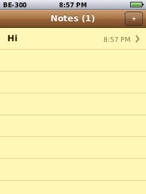
NotesSaved as you type, on the device's flash. 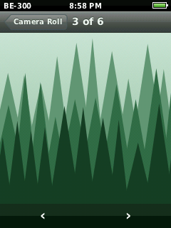
PhotosA camera roll with cached thumbnails. 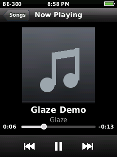
MusicMP3 and WAV, decoded on the device. 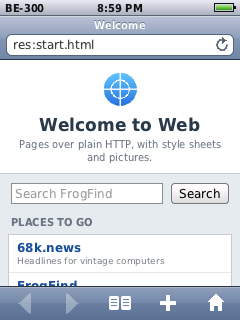
BrowserIts own HTML and CSS engine, with HTTPS. 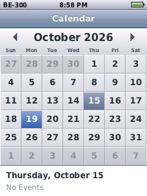
CalendarMonth view with reminders. 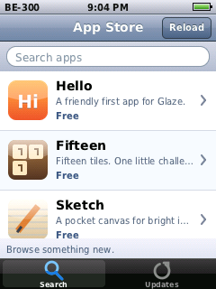
App StoreFree apps that install over the network. 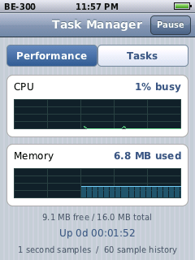
Task ManagerLive CPU, memory and running tasks. 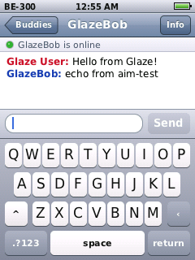
AIMA real conversation with a test OSCAR server. 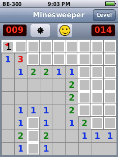
MinesweeperFrom the App Store. Hold a square to flag it. 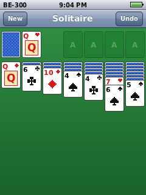
SolitaireFrom the App Store. Drag cards or tap to move them. 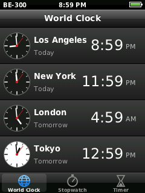
ClockWorld clock, stopwatch and timer.
Original BE-300 apps, in Glaze
The original MIPS application code runs in an ordinary Glaze process through a userspace WinCE compatibility runtime. Import the apps from your own local BeShell NAND image; vendor software is not bundled or offered in the App Store.
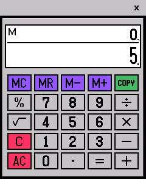
Casio CalculatorThe original keypad and arithmetic engine. 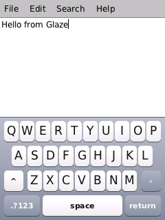
PocketNotepadEdit and save documents with Glaze's keyboard. 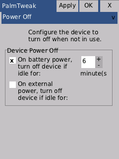
PalmTweakOriginal property pages, controls and saved preferences.
- Calculator & Notepad
- Calculator uses its original LC.dll engine. PocketNotepad supports basic editing, opening and saving documents. Search, Font and About dialogs remain unvalidated.
- Owner & OwnerInfo
- Identification and Notes tabs, text fields and checkboxes save through the original toolbar and restore on the next boot. Startup-display settings stay private to each app.
- Clock · opt-in
- The initial Home and Visiting digital displays run with UTC defaults. City selection, alarms and system clock or time-zone changes are not supported.
- RegEdit · opt-in
- Browse, create and edit keys and string values through the original dialogs, with saved settings across boots. It edits its own private registry. File import and export remain unvalidated.
- PalmTweak · opt-in
- General and Power Off pages support checkboxes, numeric spinners, validation, Apply, OK and Cancel. Saved animation and timeout preferences stay in its private registry; they do not change Glaze's animation or power policy. Other pages remain unvalidated.
This is support for selected apps, with limited controls and APIs. Selected WorldTALK network workflows are supported; multimedia and arbitrary vendor DLLs remain limited. Import instructions, supported features and compatibility limits.
What's inside
- Kernel
- A small microkernel with synchronous message passing, shared memory, threads and paged virtual memory.
- Apps
- Share their libraries through a dynamic linker. More install as packages from the App Store, onto flash or a memory card: Hello, Fifteen, Sketch, Minesweeper, Solitaire, Task Manager, AIM, Gmail, SomaFM and console emulators.
- Storage
- littlefs on a NAND flash translation layer with error correction and bad-block handling. Built-in system files are demand-paged from NAND. CompactFlash cards appear as /Card.
- Keyboard
- A Stowaway folding keyboard detected at boot supplies physical text input in Notes, Files and Browser, hiding the on-screen keyboard to make more room. The initial layout is US ASCII; live attachment is not supported.
- Network
- lwIP over NE2000 Ethernet, XI-825 Wi-Fi or WL54-CF Wi-Fi: DHCP, DNS, TCP and UDP. Security depends on the card; see the hardware status above. The clock sets itself by NTP.
- Web
- A browser engine of its own, with HTTPS through wolfSSL.
- Sound
- MP3, WAV, internet radio and system sounds through headphone PCM output, with a shared volume control. The separate internal piezo buzzer is not driven by this audio path.
The hardware
- Device
- Casio Cassiopeia BE-300
- Processor
- NEC VR4131 (MIPS)
- Screen
- 240 by 320, 16-bit colour, touch
- Memory
- 16 MB
- Flash
- 16 MB NAND
Build it yourself
Glaze runs in the be300 emulator, which also provides the MIPS cross-compiler as a Docker image.
Build the emulator and the cross-compiler image.
git clone https://github.com/jroark/be300 cd be300 cmake -S . -B build-host && cmake --build build-host docker compose build mips-devBuild Glaze. The result is a 16 MB NAND image,
out/glaze.bin.git clone https://github.com/jroark/glaze-os cd glaze-os ./build.shBoot it, with the emulated Ethernet card for networking.
../be300/build-host/be300 --nand out/glaze.bin --rtc-host-time --ne2000